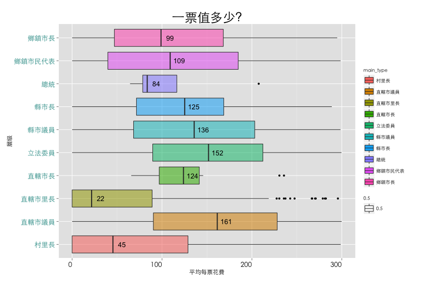
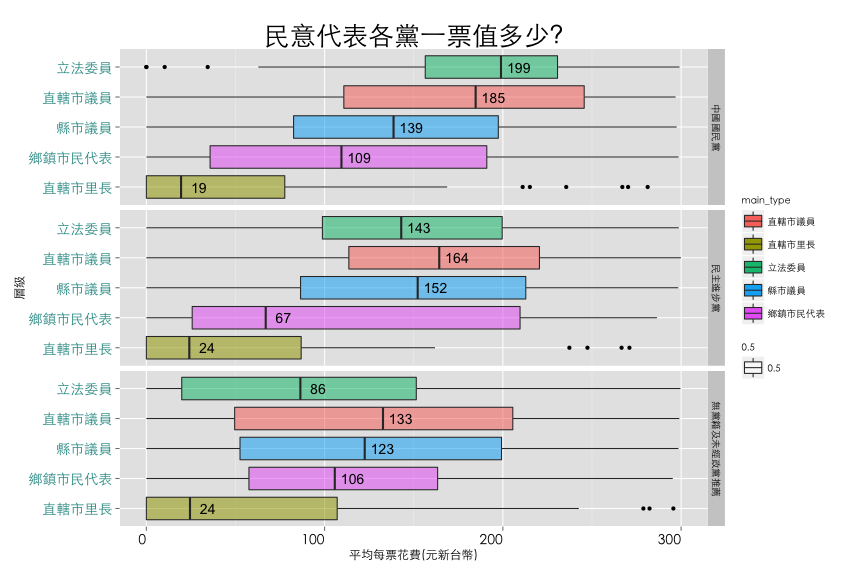
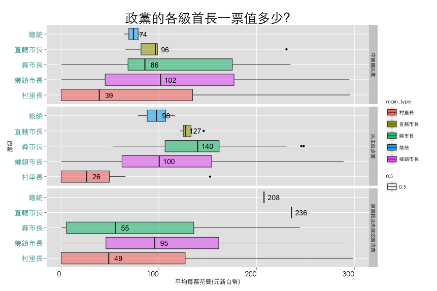
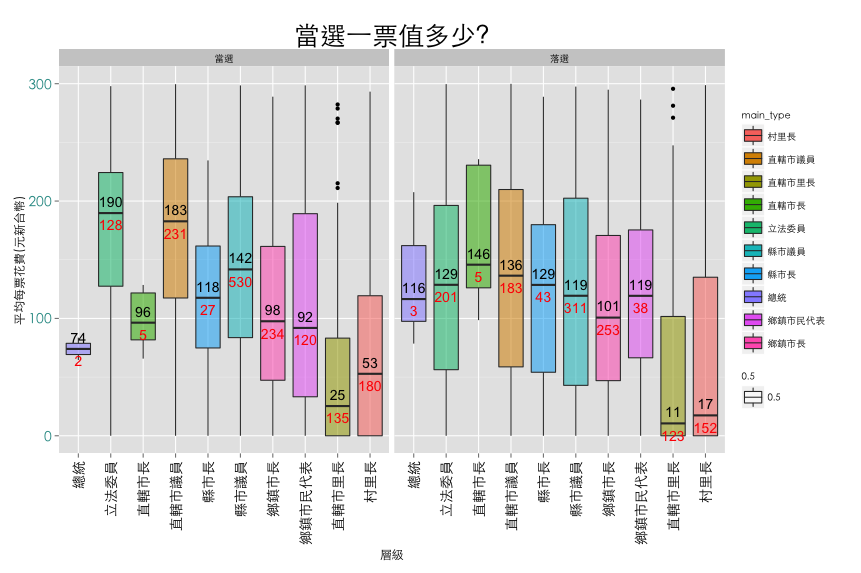
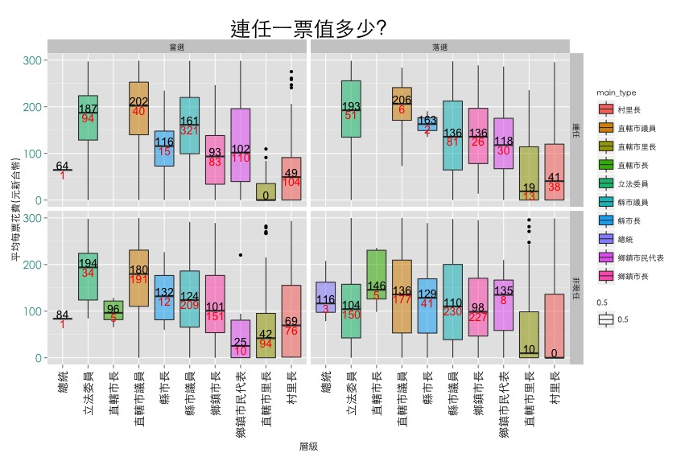

I could either watch it happens, or be part of it.
本次目標是提供有意義的資訊給要參與選舉活動的公民，因此針對以下幾個命題討論，最後總結:
當我們越能了解打算投身的選舉區域與選舉經費費用，那麼選戰最重要的基礎也就有了，剩下就是看個人能力了!
| 項目 | 筆數 |
| 選舉金流資料 | 6261 |
| 選舉投票資料 | 33643 |
| 選舉種類 | 58 |
| 比對成功可分析的選舉資訊 | 3817 |
| 選舉年度 | 8 |
使用資料的資料架構請到以下連結參閱https://github.com/ntuaha/VoteCash/tree/gh-pages
此分析並沒有考慮到候選人自身因素或者當時時空背景，僅由原始資料做簡單整理呈現結果，根據經驗來說，雖然並非完全準確的反映現況，但通常在大數據威能下，真正答案大多存在中位數或平均數附近
橫軸單位元新台幣，縱軸為選舉類別．透過Boxplot，找出各級選舉平均每張票的Q1 Q3 與中位數．
下圖各政黨民意代表的票價．橫軸單位元新台幣，縱軸為選舉類別．透過Boxplot，找出各級選舉平均每張票的Q1 Q3 與中位數．紅色數字代表資料筆數
下圖為各政黨全國或地方首長的票價．橫軸單位元新台幣，縱軸為選舉類別．透過Boxplot，找出各級選舉平均每張票的Q1 Q3 與中位數．紅色數字代表資料筆數
依勝敗選的票價．橫軸為選舉類別，縱軸單位元新台幣，．透過Boxplot，找出各級選舉平均每張票的Q1 Q3 與中位數．紅色數字代表資料筆數
依勝敗選的票價．橫軸為選舉類別，縱軸單位元新台幣，．透過Boxplot，找出各級選舉平均每張票的Q1 Q3 與中位數．紅色數字代表資料筆數．水平左右為是否當選（左為當選，右為落選），而垂直分隔則是是否連任（上為連任，下為非現任）
以下統整之前幾張圖表告訴我們幾件重要的事情
這個工作還沒有完成，還有很多事情需要補完，像是互動式圖表，各年度經費需要透過CPI修正，納入各鄉鎮實質可投票人數，或者是深入瞭解勝選人經費花費的結構，這些有趣的議題都還埋藏在這份資料之中．也因此歡迎有興趣的人聯絡我，一起把這些資訊往下專研揭露出來，讓之後有興趣投身政治的人，對於選戰所需的資源有初步快速的瞭解